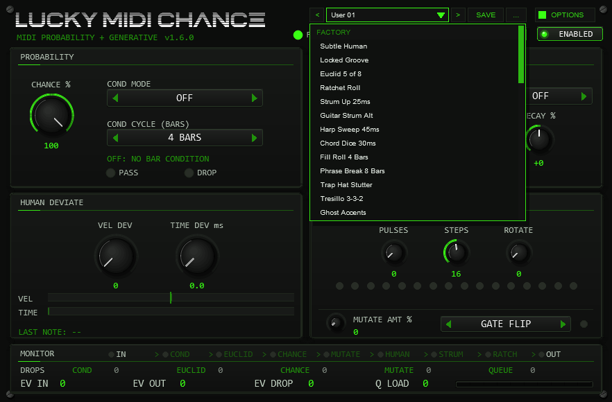
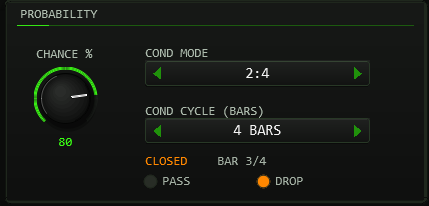
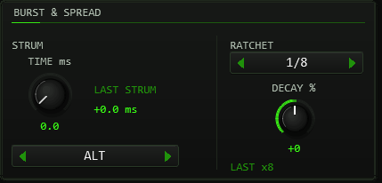
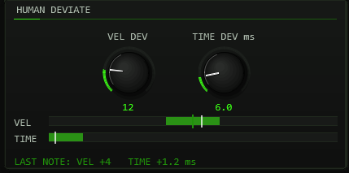
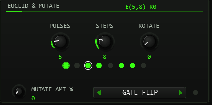
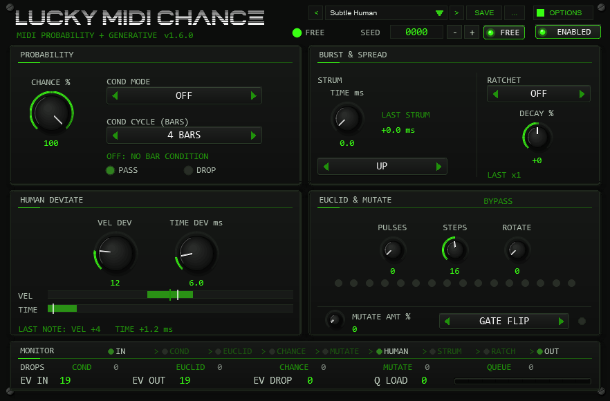
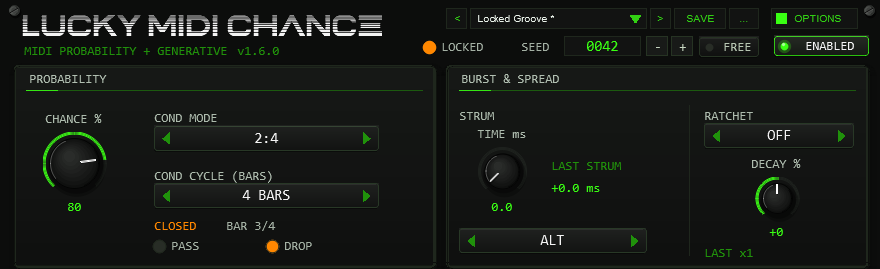
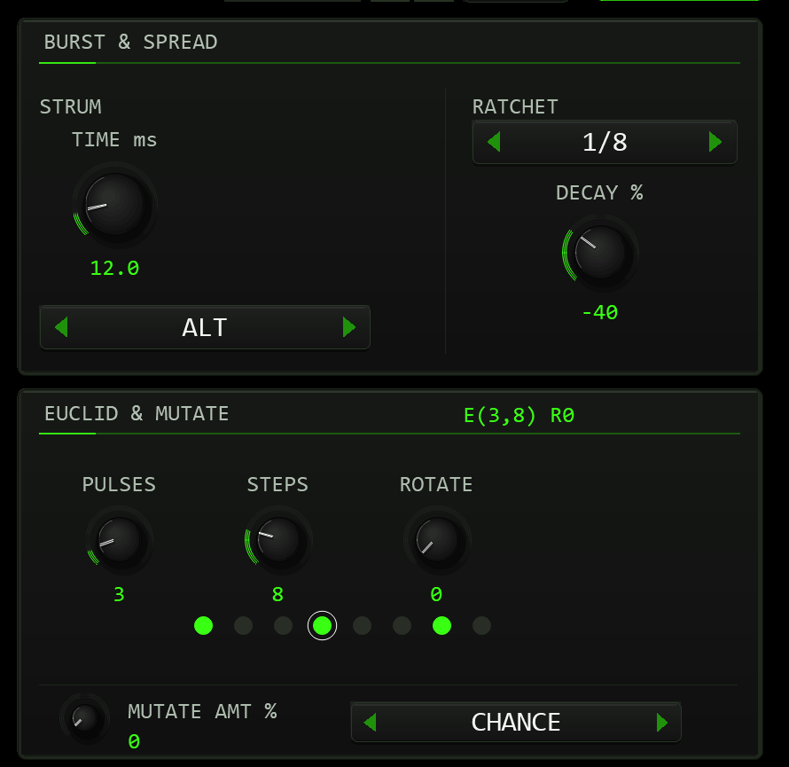
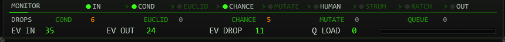
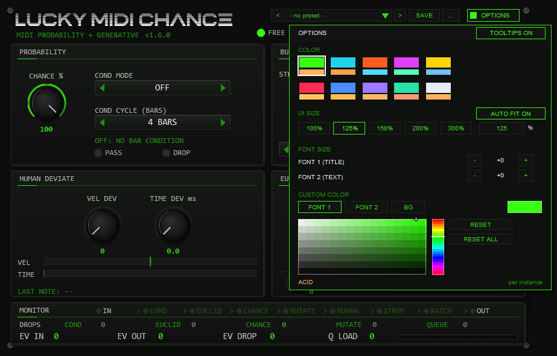

01The concept
TT-LuckyMidiChance sits between your MIDI source and the instrument and
decides — note by note — what happens to each event. It is not a random
filter that gives different results every run: every stochastic decision
comes from an internal 31-bit XorShift PRNG — a variant whose period runs
out after at most ~150 million draws (not full-period, inaudible in
practice) — and the stream is fully determined
by SEED. A locked seed produces an identical performance on
every play, bounce and project reload; seed 0 runs free.
The unit is operated entirely from its drawn front panel (700×460, Tim Techlor design) — all 45 JSFX sliders are hidden by release policy but stay alive as the parameter/automation channel. The verdict chain per incoming note-on:
note on
→ COND bar-position gate (host transport timeline)
→ EUCLID step-pattern gate (16th-note grid)
→ CHANCE probability gate (seeded draw)
→ MUTATE per-note hit (flip / velocity / division)
→ DEVIATE velocity ±VEL DEV, delay +0…TIME DEV
→ STRUM chord-window spread (rank × TIME)
→ RATCHET replaces the note by a K-hit burst in one 16th
→ QUEUE time-sorted output, note-off trackingCOND is a hard rule; MUTATE works on the combined EUCLID and CHANCE result and can reverse it in both directions. The MONITOR strip draws this chain as stages and counts every dropped note under the stage that dropped it (section 03).
Events stay on their input channel — no MPE remapping, so drum racks and monosynths keep working — and the plug-in adds zero latency: every delay it creates is a scheduled event offset inside the MIDI stream.
02Quick start
- Insert
TT-LuckyMidiChancebefore the instrument in the track's FX chain (it is a MIDI-only FX — no audio passes through). - Make sure the header toggle reads
ENABLED(click toggles toBYPASS). - Leave
SEEDat0000(LED green = FREE) for fresh variation every pass, or dial in any number 1–9999 to lock a performance (LED amber = LOCKED). - Start with
CHANCE≈ 70 andVEL DEV≈ 12 — instant organic feel without touching your part. - Add
RATCHET DIV1/8 or 1/16 for trap-style rolls, or setEUCLID PULSES/STEPSto gate notes onto a rhythmic pattern. - Short on time? Pick one of the 13 factory presets in the
preset bar (
Subtle Humanis a good start) and save your own settings withSAVE.
03The front panel
Everything you touch is drawn by the plug-in — there is no slider page. Layout top to bottom:
- HEADER
- Wordmark LUCKY MIDI CHANCE with the subtitle
MIDI PROBABILITY + GENERATIVE; to its right the
preset bar and the
OPTIONSbutton. The second header row holds the seed LED (green FREE / amber LOCKED), the SEED readout box with − + and FREE, and at the far right theENABLED/BYPASStoggle. Mouse wheel over the readout steps ±1 (Shift = ±10), right-click resets to 0. - PROBABILITY
- Top left:
CHANCEknob, theCOND MODEcombo (11 states), theCOND CYCLEcombo (2–16BARS), the COND state line (OPEN/CLOSEDwith the bar in the cycle, section 07) and the PASS (green, a note-on is sent) / DROP (amber, a note is dropped) LEDs. - BURST & SPREAD
- Top right:
STRUM TIMEknob and direction comboUP/DOWN/ALT/RANDwith theLAST STRUMreadout;RATCHETdivision comboOFF…1/16, theDECAY %knob and theLAST xNhit readout. - HUMAN DEVIATE
- Bottom left:
VEL DEVandTIME DEVknobs, two range bars with a white mark for the last note's actual values, and theLAST NOTEline. - EUCLID & MUTATE
- Bottom right: status readout
(
E(k,n) RrorBYPASS), thePULSES/STEPS/ROTATEknobs, up to 32 step LEDs (with a ring for the last checked note), theMUTATE AMTknob with value, theGATE FLIP/VEL/RATCH/ALLtarget combo and the MUTATE hit LED. - MONITOR
- Bottom strip: the processing chain
IN > COND > EUCLID > CHANCE > MUTATE > HUMAN > STRUM > RATCH > OUTin the title row, theDROPSrow, theEV IN,EV OUTandEV DROPcounters andQ LOADwith a level bar (green below 60 % of the 512 queue slots, amber to 85 %, red beyond).
Reading what happened to a note
The front shows both the settings and what they did to the last notes. All readouts below are display only: they draw no random numbers and change nothing in the MIDI stream. They reset together with the counters when playback starts.
| Readout | Where | What it tells you |
|---|---|---|
| Chain stages | MONITOR title row | A bright name is a stage that is switched on, a dim one is off. The dot flashes when the stage handles a note: COND, EUCLID and CHANCE when they check one, MUTATE on a hit, HUMAN, STRUM and RATCH when they change a queued note, OUT when a note-on is sent. RATCH can light with RATCHET OFF when MUTATE picks a division. |
DROPS | MONITOR, middle row | Every dropped note counted once, under one cause: COND, EUCLID, CHANCE, MUTATE or QUEUE (no room in the output queue). The five add up to EV DROP. If several gates reject the same note, COND wins, then a MUTATE gate flip, then EUCLID, then CHANCE. A note that MUTATE rescues is not a drop. |
| COND state | PROBABILITY, under COND CYCLE | OPEN or CLOSED at the current play position and the bar within the cycle the mode counts, e.g. BAR 2/4; FIRST BAR / NOT FIRST BAR for FIRST. Stopped: STOPPED: COND IDLE (COND passes everything). |
| EUCLID ring | step LEDs | The white ring is the current 16th step. A short inner ring marks the step of the last checked note: green when it fell on a pulse, amber when EUCLID vetoed it (before MUTATE). |
| MUTATE LED | right of the target combo | Flashes on every MUTATE hit, also on notes that are dropped later. |
LAST NOTE, white marks | HUMAN DEVIATE | The last queued note's final velocity change (VEL DEV, MUTATE VEL and the 1–127 limit together) and its HUMAN delay; the white marks show the same values on the range bars. |
LAST STRUM | BURST & SPREAD | The strum delay the last queued note received, without the HUMAN delay. |
LAST xN | under DECAY | The number of hits scheduled for the last queued note after MUTATE (x1 = no ratchet). EV OUT counts the hits actually sent. |
DROPS row are new in v1.6.0.
The MUTATE target formerly labelled CHANCE is now shown as GATE FLIP; it is the same setting, so presets and projects are unchanged.
The knobs in HUMAN DEVIATE and EUCLID & MUTATE are centred in their panels, and the LED flashes no longer depend on the screen frame rate.
MIDI processing and random sequences are unchanged: a locked SEED gives the same notes as in v1.5.1.| Widget | Gesture | Behaviour |
|---|---|---|
| Knob | drag vertically | set value; Shift = fine |
| mouse wheel | whole-number knobs (CHANCE, DECAY, VEL DEV, PULSES, STEPS, ROTATE, MUTATE AMT): one step per detent; STRUM TIME and TIME DEV: 2 % of the range per detent | |
| right-click / double-click | reset to default | |
| Button / toggle | click | set / toggle |
| Combo | click | on the name: next state (wraps); on an arrow: one step, no wrap |
| right-click | previous state (wraps) | |
| mouse wheel | one step per detent, stops at the ends |
Every control on the front has a tooltip in English that appears after the mouse rests on it for a moment (not while you drag).
OPTIONS > TOOLTIPS ON / OFF switches them off per instance; the setting is saved with the project.
04Preset bar & user bank

OPTIONS: < name > SAVE .... The name opens the list with the FACTORY and USER sections; the preset in use is marked (User 01 here).The bar loads and saves the whole musical setting of the instance in one step: SEED, CHANCE, the condition mode and cycle, strum time and direction,
ratchet division and decay, velocity and time deviation, the three Euclid values and the mutate amount and target (parameters 2–16). Not part of a preset: the ENABLED/BYPASS switch
(a preset must never silence the track), the colour scheme (OPTIONS) and the hidden diagnostic and test parameters.
| Control | Function |
|---|---|
< / > | Previous / next preset: first the 13 factory presets, then the used user slots; wraps around and loads immediately. |
| Name field | Opens the list: FACTORY (13 presets) and USER (32 slots, empty ones show - empty -). Mouse wheel scrolls, click loads. A * behind the name means the settings differ from the loaded preset. |
SAVE | Saves the current settings into the selected user slot; with a factory preset (or none) selected, into the first free slot. A name box opens (up to 24 characters, default User 07): type, Enter or OK saves, CANCEL or a click outside cancels. |
... | RENAME, COPY (into the next free slot) and DELETE (a second click confirms) for the selected user preset, and INIT (all preset parameters back to their defaults). |
| Factory preset | Settings | Use |
|---|---|---|
Subtle Human | VEL DEV 12, TIME DEV 6 ms; everything else default | Organic feel without dropping a note; free seed. |
Locked Groove | SEED 42, CHANCE 80, VEL DEV 10, TIME DEV 5 ms | A sparse but reproducible variation: the same notes drop on every play. |
Euclid 5 of 8 | EUCLID 5 pulses / 8 steps | Five of eight 16th steps pass (x.xx.xx.) — a classic rhythm gate. |
Ratchet Roll | RATCHET 1/4, DECAY −40 % | Every note becomes a four-hit roll that fades out. |
Strum Up 25ms | STRUM TIME 25 ms, UP | Chords roll upward, 25 ms per note. |
Guitar Strum Alt | STRUM TIME 14 ms, ALT, VEL DEV 8, TIME DEV 2 ms | Guitar-style down/up strokes: the direction alternates with every strum group (a single note in between does not count as a group). |
Harp Sweep 45ms | STRUM TIME 45 ms, UP, VEL DEV 6, TIME DEV 4 ms | Slow upward harp sweep through every chord, with a touch of human timing. |
Chord Dice 30ms | STRUM TIME 30 ms, RAND, VEL DEV 6 | Chord notes in a new random order every time, 30 ms apart; lock SEED for a repeatable order. |
Fill Roll 4 Bars | COND FILL, 4 BARS, RATCHET 1/2, DECAY −35 %, VEL DEV 8 | A fill layer: silent except the last two quarter notes of every 4th bar, where each 16th becomes a two-hit roll. Feed a straight 16th snare or tom part on its own track. |
Phrase Break 8 Bars | COND !FILL, 8 BARS | Everything passes except the last two quarter notes of every 8-bar phrase — the kick (or bass) drops out right before the next phrase. |
Trap Hat Stutter | MUTATE 18 % RATCH, DECAY +25 %, VEL DEV 12 | About one hat in six turns into a rising stutter roll of 2–16 hits inside its 16th; free seed, different on every play. |
Tresillo 3-3-2 | EUCLID 3 pulses / 8 steps, VEL DEV 8 | Masks a straight 16th grid to the tresillo x..x..x. (3+3+2), repeating every two beats — rim, clap, perc or dembow hats. |
Ghost Accents | MUTATE 40 % VEL, VEL DEV 6, TIME DEV 3 ms | Keeps every hit but turns roughly every third one into a ghost note or an accent, with a few ms of timing slack. |
A factory preset starts from the defaults (INIT) and changes only the listed parameters, so it never inherits settings from what you had before. ENABLED and the colour stay as they are.
Where the user bank lives. Plug-ins cannot write files, so the 32 user slots are part of the plug-in state: they are saved with the project, with FX-chain and track-template copies,
and in every REAPER preset of this plug-in (the + button in the FX window toolbar). To take your bank to another project or computer, save a REAPER preset once
(+ → Save preset) and load it there: the whole bank comes with it. Projects saved with earlier versions load unchanged with an empty bank.
Typing names. REAPER keeps Space for the transport, so type Shift+Space for a blank. Depending on your REAPER settings Esc closes the whole FX window; use CANCEL instead. (The + menu of the FX window also has Send all keyboard input to plug-in.)
The preset bar has the suite-standard 250-unit width on the 700×460 header; long names are shortened with .. in the bar and shown in full in the list.
05SEED: FREE & LOCKED
| SEED | LED | Behaviour |
|---|---|---|
0000 | green · FREE | Free-running: a fresh seed is drawn from time at every transport start — every pass differs |
0001–9999 | amber · LOCKED | Locked: identical decisions on every play from the same material — reproducible across plays, bounces, reloads and even between two instances |
The PRNG is re-seeded on every transport start and immediately when you change SEED in the panel, so A/B-ing two seeds is instant. Pause followed by resume counts as a transport start too: the counters reset and the random stream is re-seeded. With a locked seed, the same input after play start always yields the same decisions — the same notes drop, the same strums roll, the same mutations hit. Change one digit and the performance changes completely.
Note: CHANCE, MUTATE hits and DEVIATE jitter draw from one
stream; the STRUM RAND shuffle gets its own stream per chord, seeded from the same SEED and
the chord's number since the transport start — a locked seed locks everything, not just
CHANCE.
STRUM RAND included. (Up to v1.3.5 the RAND shuffle shared the main stream and could
change with the block size; projects that use a locked seed with STRUM RAND therefore play different
— again reproducible — decisions in v1.4.0.) One detail stays: notes of a chord that arrive a few
milliseconds apart across a block boundary join the open chord window in arrival order (section 08).What a locked seed locks. The decisions depend on every parameter that consumes random draws, so locking SEED also locks the rest: switching CHANCE between 100 and below, or VEL DEV, TIME DEV or MUTATE AMT between zero and non-zero (also through automation) changes how many draws each note consumes and restarts the random sequence from that note on. Playback and render only match with the same parameter state.
Two honest limits: on a loop region every pass draws its own decisions — the stream is re-seeded only at the transport start and on a SEED change, so a render from the loop start equals the first pass only. And starting playback mid-song decides differently from a run from bar 1.
06CHANCE: probability gate
| Control | Values | Function |
|---|---|---|
CHANCE | 0–100 %, def. 100 | Per-note pass probability: each note-on draws against the seeded stream; 100 = all pass, 0 = all dropped |
At 100 the gate is open and costs no random draw. Below 100, dropped
notes are removed completely — their note-off is swallowed too, so nothing
hangs. The PASS (green) LED in the PROBABILITY panel flashes when a
note-on is sent (each ratchet hit flashes), the DROP (amber) LED when
a note is dropped; MONITOR > DROPS > CHANCE counts the
notes this gate removed.
07COND: bar conditions
COND gates notes by where in the song they land — it reads the host transport, not the clip. The COND MODE combo steps through 11 states:
| Mode | Meaning |
|---|---|
OFF | No condition (default) |
1:2 · 2:2 | Pass only in bar 1 / bar 2 of every 2-bar cycle |
1:4 · 2:4 · 3:4 · 4:4 | Pass only in bar n of every 4-bar cycle |
FILL | Pass only in the last 2 quarter notes of the last bar of the COND CYCLE (in 2/4 and 3/8 that is the whole bar, so FILL equals LAST) |
!FILL | Inverse of FILL — everything except those 2 quarter notes |
FIRST | Pass only inside the bar where playback started |
LAST | Pass only in the last bar of the COND CYCLE |
The COND CYCLE combo (2 / 4 / 8 / 16 bars) sets the cycle
length used by FILL, !FILL and LAST
— the 1:2…4:4 modes have their own fixed 2- or 4-bar grid. Bars are counted on the
project timeline, and since v1.4.0 COND follows time-signature changes: whenever
playback crosses a time-signature marker, a new bar starts there and is counted on (a partial bar
before the marker counts as one bar, as in REAPER's ruler). Two honest details: the plug-in only
learns a change by playing through it — if playback starts behind a change, bars are
counted with the current time signature from the project start until the change has been passed
once (loop over it, or start before it). The anchor table holds up to 64 learned changes per
playback; further ones are not learned. And with the transport stopped COND passes everything,
exactly like OFF. One measurement detail: COND reads the note's position on the time axis
(±0.5 ms) — a note played 1–10 ms before the bar line still counts to the previous bar, and a
chord sitting on the bar line can be split.
The line under COND CYCLE shows the gate right now: OPEN or CLOSED
and the bar within the cycle the mode counts (BAR 1/2…BAR 4/4 for 1:2…4:4,
BAR n/CYCLE for FILL, !FILL and LAST, FIRST BAR / NOT FIRST BAR
for FIRST). With FILL and !FILL it switches inside the last bar of the cycle. It follows the play
position block by block; each note is still decided at its exact position.

08STRUM & RATCHET
| Control | Values | Function |
|---|---|---|
STRUM TIME | 0–100 ms, 0.1 steps | Spacing per note: within a 15 ms chord window, passing notes get sorted ranks and the k-th note is delayed k × TIME — a 4-note chord at 20 ms lands 0/20/40/60 ms |
STRUM DIR | UP · DOWN · ALT · RAND | Rank order: low→high, high→low, alternating per chord (a single note does not count as a group; first UP), or a seeded shuffle |
RATCHET DIV | OFF · 1/2 · 1/3 · 1/4 · 1/6 · 1/8 · 1/12 · 1/16 | Replaces each note by a burst of N hits inside one 16th note at the note's position — the original note-off is swallowed, so the burst length follows tempo, not your finger |
RATCHET DEC % | −100…+100 | Linear velocity ramp across the burst hits: negative fades out (−50 % at vel 100 → 100/83/66/50), positive builds, clamped 1–127 |
Strum note-offs are delayed by the same amount as their ons — chords
stay intact, just rolled, and no note is ever moved earlier than it was
played: when rank × TIME is smaller than the spread of the played onsets,
the played order wins. A chord arriving across an audio-block boundary
still joins the open window. Ratchet bursts consist of note-on/note-off
pairs (off halfway to the next hit) and every hit counts in
EV OUT. LAST STRUM shows the strum delay of the last queued
note, LAST xN under DECAY its scheduled hits (MUTATE RATCH included).

09DEVIATE: human jitter
| Control | Values | Function |
|---|---|---|
VEL DEV | 0–64, def. 0 | Uniform ± velocity jitter around the played value, clamped 1–127 |
TIME DEV | 0–50 ms, 0.1 steps | Random late per note: adds a seeded delay between 0 and TIME DEV. Never early — that is why the plug-in needs no lookahead and adds zero latency |
The two range bars under the knobs show the set ± window. The white mark
on each bar and the LAST NOTE line show what the last queued note
actually got: its final velocity change (MUTATE VEL and the 1–127 limit
included) and its HUMAN delay; the bars light up with each such note. Both jitter sources draw from the
master seed — a locked seed gives you the same “human” player every time,
dragging and pushing identically on each bounce.

10EUCLID pattern gate
EUCLID is a gate, not a generator: it distributes
PULSES hits over a STEPS-long ring using the
Bjorklund algorithm — the same maximally-even distribution as every
classic Euclidean box — and lets a note pass only when its onset lands on
a pulse step of the 16th-note grid. ROTATE shifts which step
the pattern starts on.
| Control | Values | Function |
|---|---|---|
PULSES | 0–32, def. 0 | Active hits in the ring. 0 = EUCLID bypassed (status shows BYPASS, no gating). PULSES above STEPS: every step of the ring is active, all notes pass |
STEPS | 1–32, def. 16 | Ring length in 16th steps (16 = one 4/4 bar) |
ROTATE | 0–31, def. 0 | Rotates the pattern (mod STEPS) — moves where the hits sit against the beat |
While transport plays, the step is the project's 16th-note position — the pattern repeats every STEPS sixteenths across the timeline. With transport stopped, a step counter advances per played note group (notes closer than ~15 ms share a step), so live playing is gated too. Notes on the same step share the verdict — a chord passes or drops together.
The step LEDs show the rotated pattern (acid dot = pulse, white ring =
current step). A short inner ring marks the step of the last checked note:
green on a pulse, amber when EUCLID vetoed it; MONITOR > DROPS >
EUCLID counts the vetoed notes. Classic references: E(3,8) = x..x..x.,
E(5,8) = x.xx.xx., E(7,16) =
x..x.x.x..x.x.x.

11MUTATE
MUTATE is a per-note seeded dice roll, not a slow drift: every
note-on draws once against MUTATE AMT; on a hit, the chosen
target is perturbed for that note only.
| MUTATE TGT | What a hit does |
|---|---|
GATE FLIP | Reverses the combined EUCLID and CHANCE verdict — a dropped note plays, a passing note drops. COND still applies. (Labelled CHANCE up to v1.5.1; same setting.) |
VEL | Offsets velocity by a seeded ±48 (clamped 1–127) |
RATCH | Replaces the ratchet division for this note by a random one (1/2…1/16) |
ALL | All three at once |
MUTATE AMT (0–100 %) is the hit probability — low values
give occasional “wrong” notes, high values reorganise whole passages.
COND is never mutated: the bar condition is a hard rule. Like everything
else, mutation is fully seeded — a locked SEED replays the same hits.
The LED right of the target combo flashes on every hit; MONITOR > DROPS >
MUTATE counts the notes a gate flip dropped (notes it rescued are not counted).
12In practice
Three recipes that show how the modules are meant to work together. Every control named here is documented in the sections above — what matters here is the order of moves and what to watch while it runs.
1 · A real-player lane — humanize only
Goal: make a quantized keys, pad or drum lane feel played without losing a single note.
- Leave
CHANCEat 100,EUCLID PULSESat 0 (BYPASS),RATCHETOFF,MUTATE AMT0 andSTRUM TIME0 — the whole verdict chain now passes every note; only DEVIATE touches the events. - Play the loop and raise
VEL DEVuntil the accents breathe — 8–14 is the sweet spot; much beyond ~20 reads as sloppy rather than human. - Add
TIME DEV3–8 ms. It only ever adds lateness (that is what keeps the unit zero-latency), so if the part drags, nudge the clip a few milliseconds earlier instead of hoping for pushes. - Keep
SEEDFREE while writing; before printing, lock any number so every bounce reuses exactly the same “player”.

Watch: EV IN must equal EV OUT and
EV DROP stays at 0 — if DROP moves, a gate you forgot is still
on. The VEL/TIME range bars pulse with every note.
Pitfalls: a locked seed makes every replay identical — when you
double-track, give the second take a different locked seed, otherwise
both “players” deviate in perfect unison and the double sounds like one.
Two FREE instances are no alternative: instances that start in the same
audio block can draw the same sequence, because the free seed is read from
the clock at ~1 ms resolution.
Jitter applies per note-on, so held chords smear slightly — halve
TIME DEV for chord material.
2 · Find it, lock it, print it — reproducible variation
Goal: thin a busy loop into a controlled variation that survives bounce and reload bit-identically.
- Set
CHANCE60–75 and, if you want phrase-level structure, aCOND—2:4passes only the second bar of every four,FILL/!FILLgate the last two quarter notes of the COND CYCLE's last bar. - Add
MUTATE AMT~15 onVELorALLfor occasional flipped verdicts and accents. - Lock the seed first: dial any number ≥ 1 (amber LOCKED LED), then step the SEED box +1 per looped pass — every number is a different but perfectly repeatable arrangement.
- When a pass lands, stop touching SEED: from that moment every replay, freeze and bounce is identical — same drops, same mutation hits, same deviate jitter, same RAND strum order.
- Print via freeze/render-in-place; the committed take is exactly what you auditioned.

Watch: the PASS/DROP LEDs and the counters — expect
EV OUT + EV DROP ≈ EV IN (ratchet bursts inflate EV OUT, see
below). If the verdicts do not match your mental picture, the DROPS
row in MONITOR tells you which stage is eating notes, and the COND line shows
whether the bar condition is open right now.
Pitfalls: in FREE mode the drawn seed is never shown — a magic pass you hear while FREE cannot be recovered, so audition locked from the start (or freeze the moment you like it). Editing the clip changes the note stream, so the same seed then yields different decisions. Changing SEED mid-play reseeds instantly — ideal for A/B, but decisions before the edit do not repeat.
3 · Rolls and gates — ratchet meets euclid
Goal: trap-style hi-hat rolls and grid-locked rhythmic gating.
- Feed a steady 16th-note lane. Set
RATCHET DIVto 1/8 or 1/16 — each note is replaced by a burst inside one 16th at the note’s position, so rolls stay tempo-locked at any BPM. - Turn
RATCHET DEC %negative (−30…−60) for fade-out rolls; positive values build toward the next hit. - Layer the gate:
EUCLID PULSES 3 / STEPS 8passes only onsets on the x..x..x. pattern — an instant maximally-even rhythm.ROTATEshifts the hits on or off the beat. - Rolls only where they belong:
COND FILL(the last two quarter notes of the cycle’s last bar) silences everything else, so run the rolls as a fill layer on their own track — theFill Roll 4 Barsfactory preset is exactly that — and keep the straight line on a second instance withCOND !FILL(RATCHET off).

Watch: the step-LED ring (white marker = current 16th) and
Q LOAD — dense bursts fill the 512-slot queue quickly and the
bar turns amber past 60 % and red past 85 % of its 512 slots. If a new note does not fit completely
(a whole burst, or a note plus room for its later note-off), that new note is left out and counts in
EV DROP and under DROPS > QUEUE — notes already playing always get their note-off. EV OUT counts every burst hit
individually, so it legitimately runs far ahead of EV IN.
Pitfalls: a burst always fits inside one 16th regardless of note
length — the original note-off is swallowed, so for sustained rolls
retrigger the note. EUCLID sits before CHANCE, STRUM and RATCHET in the
verdict chain: a note on a dead step never reaches the burst. A strummed
chord under ratchet becomes a staircase of mini-rolls (rank × TIME shifts
each burst). With transport stopped the pattern advances per note group
(~15 ms) rather than along the timeline — judge the real alignment
while the loop plays. If a burst ever hangs, a transport jump flushes
everything instantly, a CC 123 its channel.
13MIDI thru & panic
- Non-note traffic (CC, pitchbend, aftertouch, program change) passes with its original timing — everything travels through one time-sorted queue, so output order is always sample-correct.
- Panic fires on every transport start, a transport jump of
more than one bar (not while in BYPASS), switching
ENABLED → BYPASSand a sample-rate change: queued generated notes are discarded and a note-off is sent for every note still sounding on the output, on all channels — including notes you are still holding (their later note-off is swallowed). No hangers. CC and pitchbend already in the queue survive a panic, and anything scheduled up to the panic moment still goes out first. CC 123(All Notes Off) andCC 120(All Sound Off) are passed on to the instrument and clear only their own channel: the unit first ends the notes it generates on that channel (note-offs just before the CC), notes on other channels keep playing. REAPER's own panic therefore reaches the instrument.- Note-offs are tracked per channel+note: a dropped note's off is swallowed, a passed note's off is delivered (shifted by the same strum/deviate delay as its on), and offs for notes the unit never saw pass straight through. If the same key is struck again before its note-off arrives (overlapping notes of the same pitch), the note-offs still never go out before a delayed note-on of that key — both notes end, possibly a little later than played.
- Everything stays on the input channel — no MPE splitting, so drum racks and channel-sensitive instruments keep working.
14Automation & parameters
All panel controls are ordinary JSFX parameters — hidden from the generic slider page by design, but fully exposed to REAPER: they appear in the parameter list for envelopes, MIDI/OSC learn, track controls and parameter modulation. Every panel gesture also reports itself as a real parameter change, so touch/latch/write automation recorded from the front panel works exactly like automating the slider.
| Param # | Parameter | Panel control |
|---|---|---|
| 1 | ENABLE | Header toggle ENABLED/BYPASS |
| 2 | SEED (0=free) | Header readout, −/+/FREE, wheel, right-click |
| 3 | CHANCE % | PROBABILITY knob |
| 4 | COND MODE | COND MODE combo |
| 5 | COND BARS | COND CYCLE combo 2/4/8/16 BARS |
| 6 | STRUM TIME ms | STRUM TIME knob |
| 7 | STRUM DIR | UP/DOWN/ALT/RAND combo |
| 8 | RATCHET DIV | division combo OFF…1/16 |
| 9 | RATCHET DEC % | DECAY % knob |
| 10 | VEL DEV | VEL DEV knob |
| 11 | TIME DEV ms | TIME DEV knob |
| 12–14 | EUCLID PULSES / STEPS / ROT | EUCLID knobs |
| 15 | MUTATE AMT % | MUTATE knob |
| 16 | MUTATE TGT | GATE FLIP/VEL/RATCH/ALL combo (value 0 = GATE FLIP) |
| 40 | UI Color | OPTIONS box, COLOR (colour scheme 0–9) |
Parameters 41–45 (PB CMD/ARG/A/B/C) are the test interface of the preset bank (save, load and check slots without the mouse); leave them alone.
The commands that write (save, load, factory preset, INIT) only work while a test script has unlocked them; an envelope, MIDI learn or
parameter modulation on parameter 41 does nothing to your presets.
Parameters 17–39 (and only these besides 41–45; 40 is the colour scheme above) are a diagnostic/test bus used by the automated test
harness: the SNT sanity tag, the live counters
(EV IN/OUT/DROP, Q LOAD, ACT), a
per-note query bus (Q NOTE → Q STATUS/DELAY/VEL), an event
log of up to 2048 entries — it fills once, then stops
(LOG EN/IDX/KIND/M1–M3/T/N) — and environment
echoes (SRATE, TEMPO, BEATSAMP).
Most are read-only outputs the DSP overwrites every block — automating
them is pointless, and users can safely ignore them; the interesting ones
are mirrored on the front panel anyway.

15Options / Color & Font

Click OPTIONS in the header to open the box. Under COLOR pick one of ten schemes: ACID, CYAN, ORANGE, MAGENTA, YELLOW, RED, BLUE, VIOLET, MINT or ICE.
A click on a swatch changes the whole front at once (accent, dimmed accent, panel and ground tint, knob discs); the choice rides on hidden parameter UI Color (40).
FONT SIZE offsets the two font slots in steps of ~8 % (FONT 1 (TITLE) for panel titles and the wordmark, FONT 2 (TEXT) for labels and values, −4…+8 each).
Since v1.4.0 every text on the front grows only as far as its place allows: a label that would run into its neighbour stays at the largest step that fits (the texts inside buttons, combo boxes and the panel titles follow the setting freely).
Under CUSTOM COLOR pick a target — FONT 1, FONT 2 or BG (the background) — and dial it with the saturation/brightness field and the hue strip; the swatch on the right previews the target's active colour.
RESET returns the chosen target to the scheme, RESET ALL clears every custom style.
TOOLTIPS ON / OFF in the title row of the box turns the control tooltips on or off.
Everything in the box applies per plug-in instance and is saved with the project and with FX chains; a click outside the box closes it. The factory colour of TT-LuckyMidiChance is ACID.
The LOCKED seed LED uses the warning colour of the scheme (orange under ACID); the Q LOAD bar keeps fixed zones instead — green below 60 %, yellow to 85 %, red beyond — whatever the scheme. Colour has no effect on the MIDI processing.
16Troubleshooting
- Notes go missing and you do not know why — read MONITOR >
DROPS: it names the stage that dropped them (COND, EUCLID, CHANCE, MUTATE or QUEUE). - Everything passes regardless of settings — the header toggle is on
BYPASS, or the FX sits after the instrument in the chain (it must see the MIDI before the instrument does). - Different results on every bounce —
SEED = 0000is free-running; lock any number for a reproducible performance. - EUCLID seems to do nothing —
PULSES = 0bypasses the gate (status readsBYPASS). Set PULSES ≥ 1. If notes drop, check ROTATE: your onsets may land between pulses; notes quantize to the nearest 16th step. - COND does nothing — it only works while transport plays; stopped, it passes everything by design. Also check that the song position actually reaches the gated bars.
- FILL never triggers — FILL is the last 2 quarter notes of the cycle's last bar (in 2/4 and 3/8 the whole bar); make sure COND CYCLE matches your musical phrase length.
- COND counts bars wrongly after a time-signature change — playback started behind the change; start before it (or loop over it once) so the plug-in can learn where the new bars begin.
- Strum spreads a chord too far —
STRUM TIMEis the per-note step, not the total: an n-note chord spreads (n−1) × TIME. Halve it for bigger chords. - Ratchet notes hang or the queue fills during dense bursts — panic
clears automatically on transport start, transport jump or
ENABLE→off, and a
CC 123flushes its channel (and is passed on to the instrument). TheQ LOADbar turns amber past 60 % and red past 85 % of the 512-slot queue: shorten bursts or lower the ratchet division.
17UI Size & Saved Options
Updated in v1.3.5. New instances open at 125% UI size for clearer text. The controls and text are redrawn at the selected size; the colour scheme and background retain their appearance.
Open OPTIONS and choose UI SIZE: 100% / 125% / 150% / 200% / 300%, or click the percentage field and enter a whole number from 25 to 400. Enter or a click outside the field applies it; Escape cancels the edit. Values outside the range are limited to the nearest supported value.
AUTO FIT. When you drag the edge of the FX window, the front rescales to the new window size (the largest whole percentage that shows the whole front, 25 to 400 %) and the scrollbars disappear. The UI SIZE buttons and the percentage field still set a fixed size, which stays until you change the window again. AUTO FIT ON / OFF in the UI SIZE row of OPTIONS switches the rescaling off for this instance; the setting is saved with the project. Switching it on fits the front to the current window at once.
If the enlarged front exceeds the host window, use the horizontal and vertical scrollbars to reach every control. The mouse wheel over a scrollbar moves that view. OPTIONS stays visible at the upper right. You can also enlarge the REAPER FX window to show more of the front.
All OPTIONS settings are saved per instance: UI size, colour scheme, title and text font sizes, custom title/text/background colours, colour-picker target, and TOOLTIPS ON / OFF. Closing and reopening the FX window keeps them; saving and reopening the project restores them. They also travel with FX chains and native REAPER FX presets. Save the project to keep changes between sessions.
The sound presets in the plugin's own preset bar retain the instance's appearance settings. Older projects and style blocks remain readable; projects that predate UI SIZE use the new 125% default.